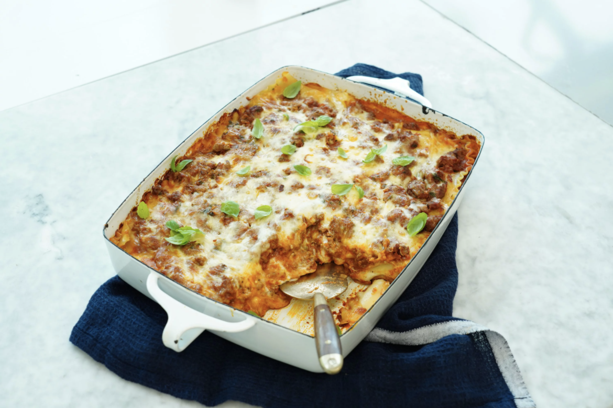

French-Style Lasagna

Ingredients
- 1 pound extra-lean ground beef
- 1 (16 ounce) can refried beans
- 2 teaspoons dried oregano
- 1 teaspoon ground cumin
- ¾ teaspoon garlic powder
- 12 dry lasagna noodles
- 2 ½ cups water
- 2 ½ cups salsa
- 2 cups sour cream
- ¾ cup chopped green onions
- 1 (2 ounce) can sliced black olives
- 1 cup shredded Pepper Jack cheese
Steps
Step 1
In a large skillet, cook the ground beef over medium-high heat until evenly brown. Drain off excess fat. In a large bowl, combine the cooked beef, refried beans, oregano, cumin and garlic powder.
Step 2
Place four of the uncooked lasagna noodles in the bottom of a 9x13 inch baking dish. Spread half of the beef mixture over the noodles. Top with 4 more uncooked noodles and the remaining half of the beef mixture. Cover with remaining noodles. Combine the water and the salsa in a medium bowl, and pour over all.
-
Step 3
Cover tightly with foil. Bake at 350 degrees F (175 degrees C) for 1 1/2 hours, or until noodles are tender.
-
Step 4
In a medium bowl, combine the sour cream, green onions and olives. Spoon over casserole, and top with shredded cheese. Return to the oven, and bake for an additional 5 to 10 minutes, or until cheese is melted.